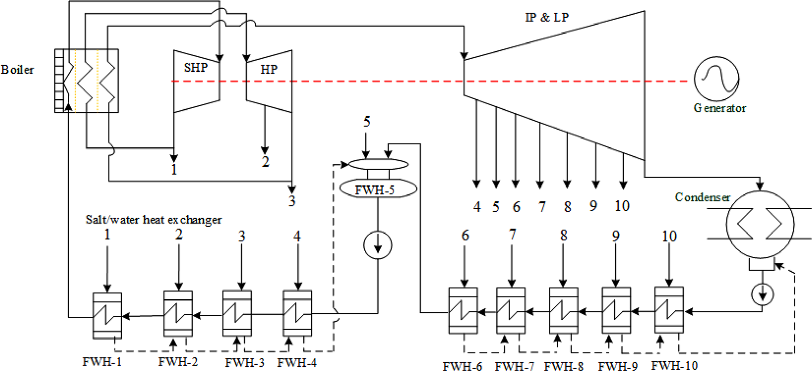
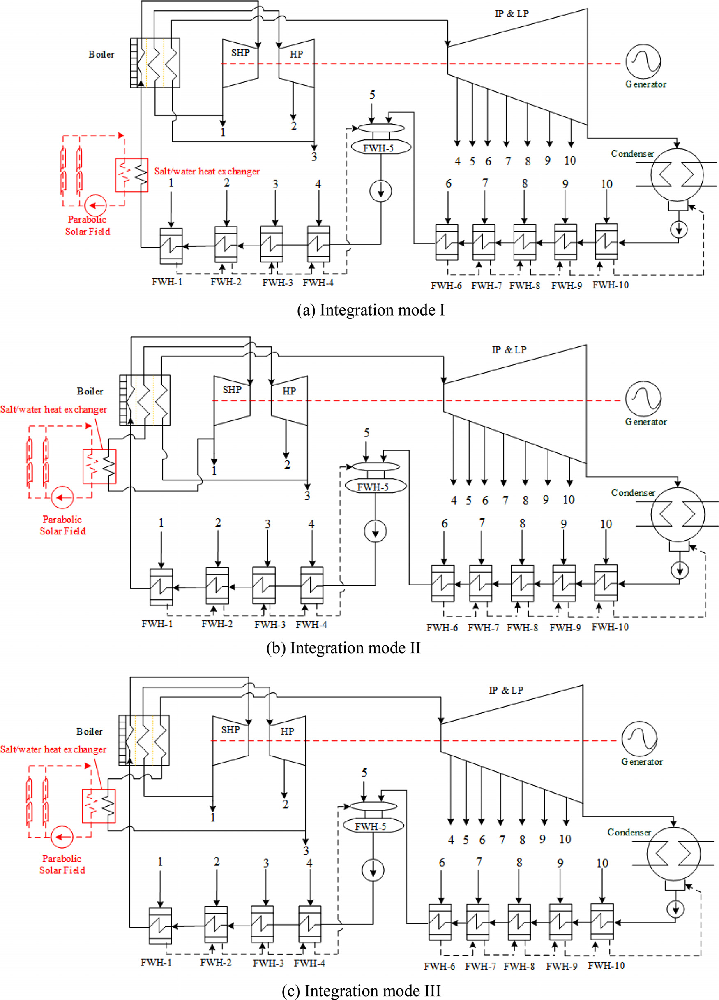
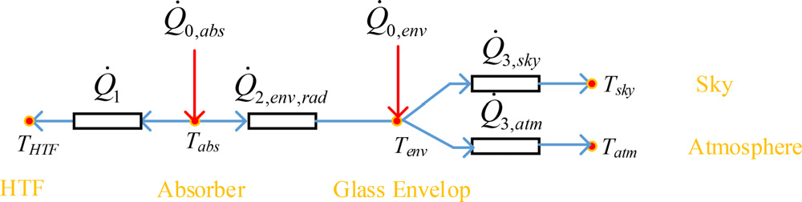
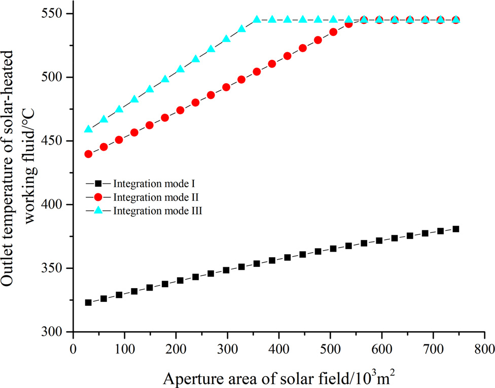
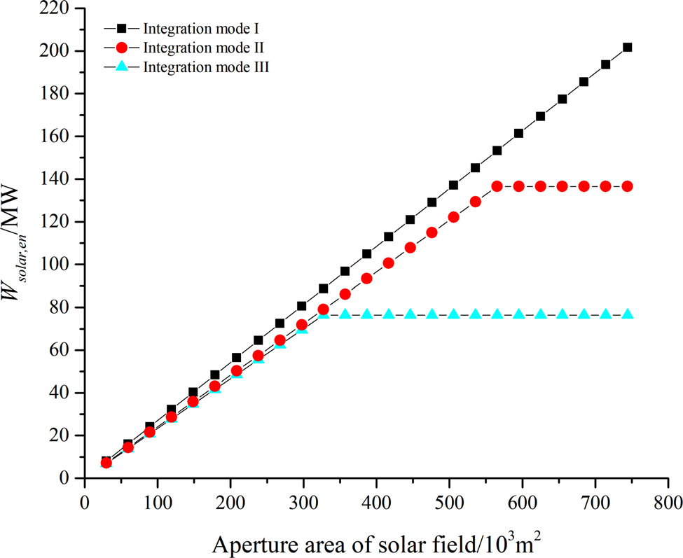
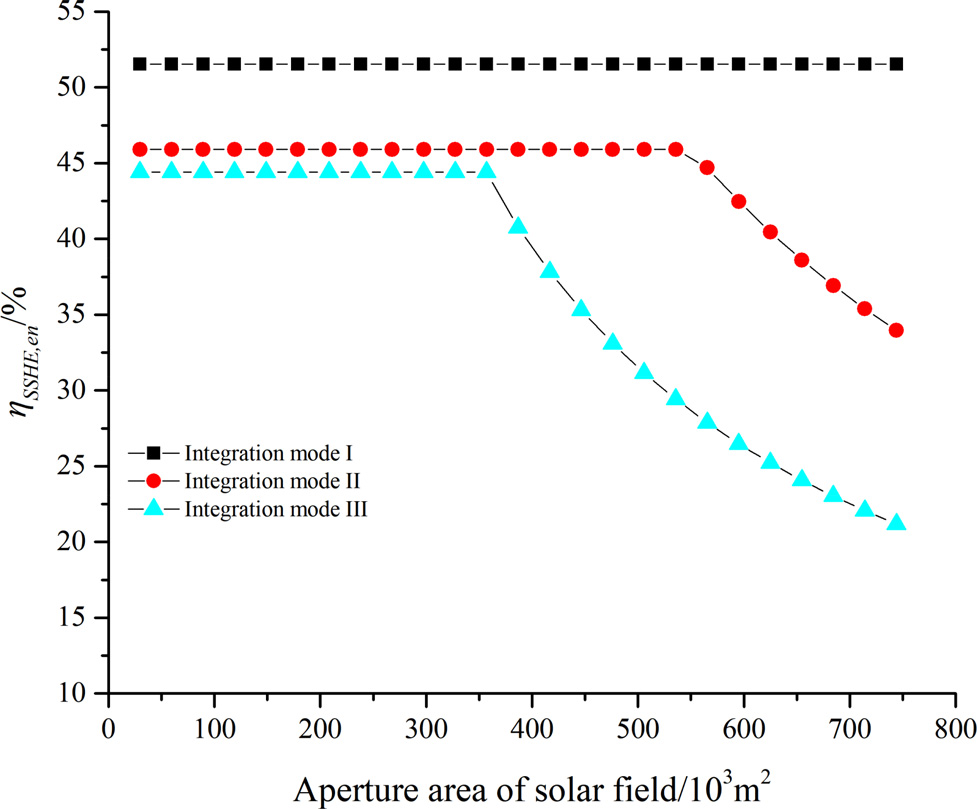
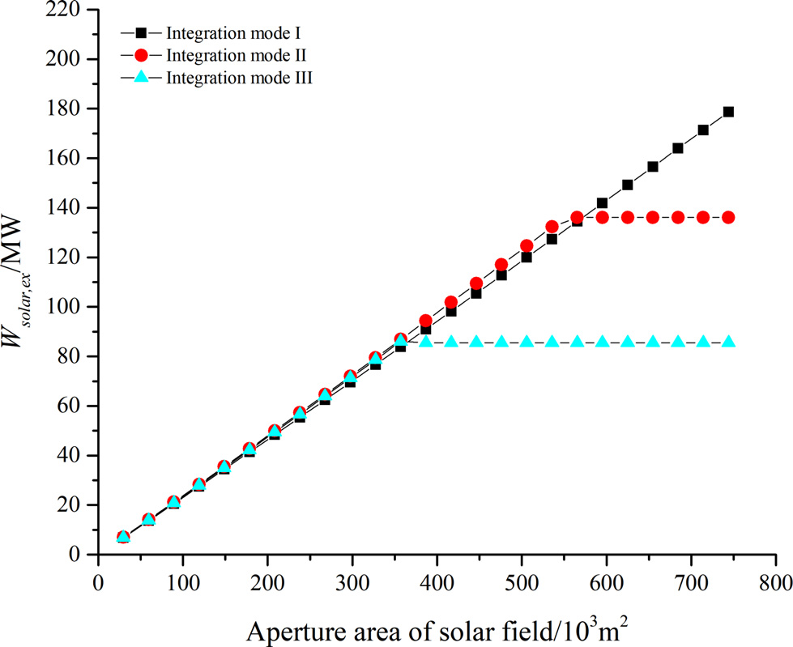
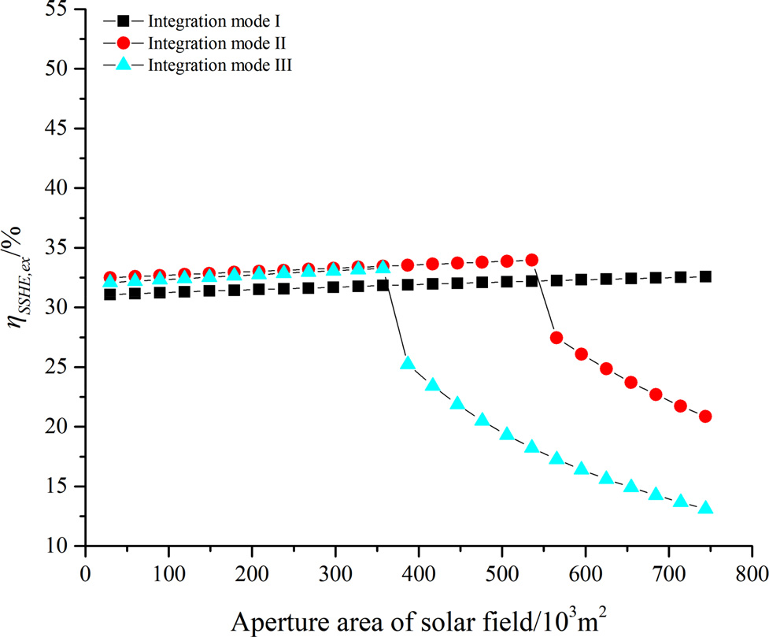
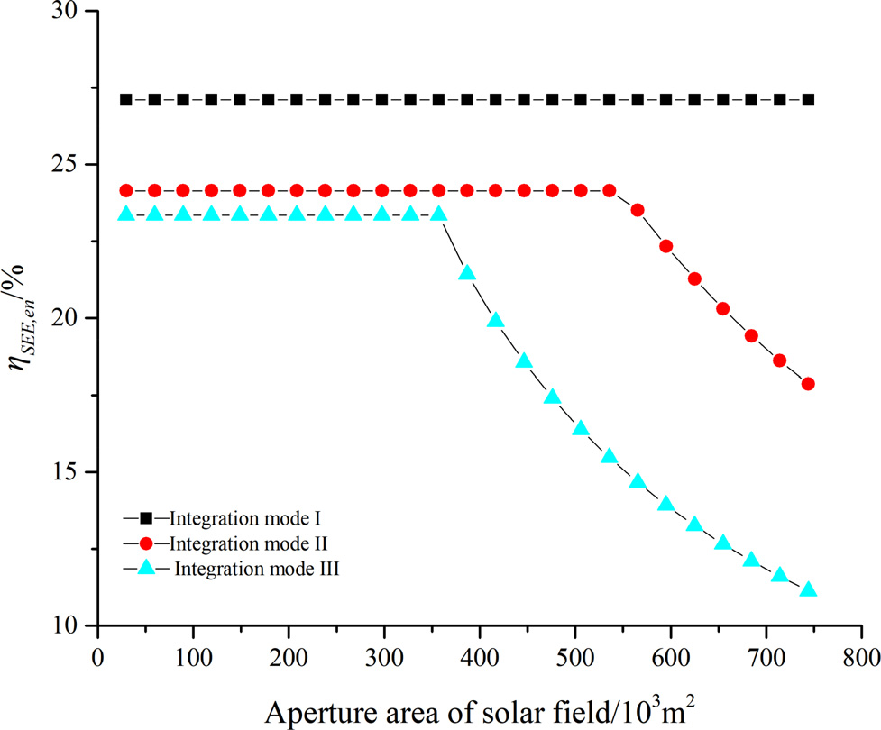
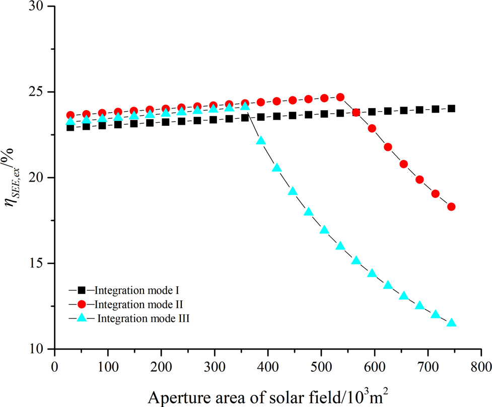

In this paper, solar heat with mid- and high-temperature collected by molten salt parabolic trough solar field was integrated into the boiler sub-system of the double reheat coal-fired power generation system. Three typical integration modes were, respectively, evaluated by energy and exergy perspectives in terms of solar-generated electricity and solar energy conversion efficiency. Integration modes I–III utilized solar heat to preheat the inlet superheated steam, inlet reheated steam and inlet double reheated steam, respectively.
Based on the case study through energy evaluation, it indicated that integrating solar energy with lower temperature led to higher solar-generated electricity, higher solar-to-solar heat efficiency, and higher solar-to-electricity efficiency. Integration mode I was unreasonably regarded superior to the other two, because the energy evaluation method ignored the quality of solar energy and mistakenly regarded the efficiency of solar heat to solar-generated electricity as the cycle efficiency.
As an update, exergy evaluation takes both energy quantity and energy quality into consideration by regarding the efficiency of solar heat exergy to solar-generated electricity as the cycle exergy efficiency. It indicated that integration mode II was more recommended, with the highest solar-to-solar heat exergy efficiency and solar-to-electricity efficiency being 34.0% and 24.7%, respectively. The corresponding aperture area and solar-generated electricity are 5.7×10⁵ m² and 136.1 MW, respectively.
本文将由熔盐抛物槽式太阳能集热场收集的中高温太阳能热量集成到二次再热燃煤发电系统的锅炉子系统中。分别从能量和㶲的角度，对三种典型集成方式在太阳能发电量和太阳能转换效率方面进行评价。集成方式I–III分别利用太阳能热量预热进口过热蒸汽、进口再热蒸汽和进口二次再热蒸汽。
基于案例研究的能量评价结果表明，将太阳能与较低温度集成可带来更高的太阳能发电量、更高的太阳能-太阳能热效率和更高的太阳能-电效率。集成方式I被不合理地认为优于其他两种方式，因为能量评价方法忽略了太阳能的品质，并错误地将太阳能热到太阳能发电量的效率视为循环效率。
作为改进，㶲评价同时考虑能量数量和能量品质，将太阳能热㶲到太阳能发电量的效率视为循环㶲效率。结果表明，集成方式II更为推荐，其最高的太阳能-太阳能热㶲效率和太阳能-电效率分别为34.0%和24.7%。相应的集热面积和太阳能发电量分别为5.7×10⁵ m²和136.1 MW。
Most of the early research focused on using solar energy to heat part of the working fluid in a coal-fired power generation system with single reheat. Eric conceptualized this kind of system as solar-aided power generation (SAPG) system. It could be flexibly switched to fuel-saving mode or power-boosting mode based on the load condition. Qin pointed out that SAPG system increased the conversion efficiency of solar energy, because both solar and coal shared high-capacity turbines. Zhao revealed that solar energy collected by synthetic oil parabolic trough should be integrated to preheat the feedwater in the regenerative system. Based on a South African case, Pierce proved that a SAPG system was better than a standalone concentrated solar power (CSP) system by effectively lowering the cost. Li compared several integration strategies, indicating that using a solar tower to preheat the exhaust steam from intermediate-pressure (IP) cylinder could further lower the standard coal consumption rate. Li proposed all-condition mechanism model of the SAPG system and assessed the system performance in the view of safety and thermal efficiency. Wu optimized the integration strategy of solar-aided combined heat and power system, indicating that subsequently preheating reheated steam and then first-stage feedwater was more recommended. Yan improved the control strategy regulate flue gas damper for the changes of direct normal irradiance (DNI) conditions. Conclusively, SAPG technology could efficiently increase the conversion efficiency of solar energy.
早期研究大多集中于利用太阳能加热单次再热燃煤发电系统中的部分工质。Eric将此类系统概念化为太阳能辅助发电（SAPG）系统。该系统可根据负荷情况灵活切换至节煤模式或功率提升模式。Qin指出SAPG系统提高了太阳能的转换效率，因为太阳能和煤共用大容量汽轮机。Zhao揭示了由合成油抛物槽式集热器收集的太阳能应用于预热回热系统中的给水。基于南非案例，Pierce证明了SAPG系统通过有效降低成本优于独立的聚光太阳能发电（CSP）系统。Li比较了几种集成策略，表明利用太阳能塔预热中压（IP）缸排汽可进一步降低标准煤耗率。Li提出了SAPG系统的全工况机理模型，并从安全性和热效率角度评估了系统性能。Wu优化了太阳能辅助热电联产系统的集成策略，表明先预热再热蒸汽再预热第一级给水更为推荐。Yan改进了根据法向直射辐照（DNI）条件变化调节烟气挡板的控制策略。总之，SAPG技术能够有效提高太阳能的转换效率。
The integration of solar energy always leads to coal-fired generation systems working under the off-design condition. Wu proposed the matrix thermal balance equation to efficiently calculate the mass flow of extraction steam in each stage. Hou found that certain integration strategies led to temperature fluctuations of reheated steam. Qin optimized the solar multiple and thermal energy storage of the SAPG system operating at various strategies. Jiang designed a solar-aided double reheat coal-fired power generation system based on solar tower technology, which further increased both the power output and solar-to-electricity efficiency.
In the existing research of SAPG system, synthetic oil and parabolic trough collector are widely adopted due to its mature technology. As the working temperature of synthetic oil is limited to approximately 400°C, it is suitable only for integrating solar heat below 400°C. However, the temperature of superheated steam, reheated steam and double reheated steam in the boiler sub-system is generally above 500°C. The molten salt parabolic trough solar field can collect solar heat with a temperature up to 550°C, which could meet the temperature requirement of heating these high-temperature steams.
太阳能的集成总会导致燃煤发电系统在非设计工况下运行。Wu提出了矩阵热平衡方程以高效计算各级抽汽的质量流量。Hou发现某些集成策略会导致再热蒸汽温度波动。Qin优化了在不同策略下运行的SAPG系统的太阳能倍数和储热。Jiang设计了基于太阳能塔技术的太阳能辅助二次再热燃煤发电系统，进一步提高了功率输出和太阳能-电效率。
在现有的SAPG系统研究中，合成油和抛物槽式集热器因其技术成熟而被广泛采用。由于合成油的工作温度被限制在约400°C，它仅适用于集成低于400°C的太阳能热量。然而，锅炉子系统中过热蒸汽、再热蒸汽和二次再热蒸汽的温度通常在500°C以上。熔盐抛物槽式太阳能集热场可以收集温度高达550°C的太阳能热量，能够满足加热这些高温蒸汽的温度要求。
There exist two research gaps for a SAPG system using molten salt as the heat transfer fluid. The first problem is how to integrate solar heat with mid- and high-temperature. As the generated electricity of a DRCFPGS mainly depends on the boiler sub-system, this paper focuses on integrating solar heat into the boiler sub-system. Three typical integration modes are proposed, using solar heat to preheat the inlet superheated steam, inlet reheated steam and inlet double reheated steam.
The second problem is how to evaluate the performance of solar energy conversion. In the existing research of the SAPG system, with the integration of solar energy into the preheating sub-system, it is easy to calculate the more generated electricity (i.e., solar-generated electricity) using energy evaluation. However, as the temperatures of main steam, reheated steam and double reheated steam should be kept stable, integrating solar energy into the boiler sub-system will not influence the generated electricity of SADRCFPGS. Whether to use energy evaluation method or exergy evaluation method should be compared and discussed to optimize the solar integration.
对于使用熔盐作为传热流体的SAPG系统，存在两个研究空白。第一个问题是如何集成中高温太阳能热量。由于DRCFPGS的发电量主要取决于锅炉子系统，本文侧重于将太阳能热量集成到锅炉子系统中。提出了三种典型的集成方式，分别利用太阳能热量预热进口过热蒸汽、进口再热蒸汽和进口二次再热蒸汽。
第二个问题是如何评价太阳能转换性能。在现有的SAPG系统研究中，将太阳能集成到预热子系统中，利用能量评价方法很容易计算出增加的发电量（即太阳能发电量）。然而，由于主蒸汽、再热蒸汽和二次再热蒸汽的温度需要保持稳定，将太阳能集成到锅炉子系统不会影响SADRCFPGS的发电量。应当比较和讨论使用能量评价方法还是㶲评价方法，以优化太阳能集成。
A SADRCFPGS consists of the original DRCFPGS and the newly added molten salt parabolic trough solar field. Figure 1 is the schematic diagram of a typical DRCFPGS. The outlet feedwater from condenser is first pressurized by a condensate pump and then preheated by six feedwater heaters (FWHs). Then, the outlet feedwater from the deaerator is further pressurized by a pump and then heated by the other four FWHs. After that, the preheated and pressurized feedwater is superheated in the boiler to the designed temperature. The superheated steam first expands in the superhigh-pressure (SHP) cylinder, then returns to the boiler for the first reheat. The first reheated steam expands in the high-pressure (HP) cylinder, then returns to the boiler for the double reheat. The double reheated steam expands in the intermediate-pressure (IP) cylinder and low-pressure (LP) cylinder to generate electricity. The extraction steams from the cylinders flow to the corresponding FWHs, while a certain amount of extraction steams to provide the heat source in the corresponding FWHs.
SADRCFPGS由原有的DRCFPGS和新增加的熔盐抛物槽式太阳能集热场组成。图1为典型DRCFPGS的原理图。来自凝汽器的出口给水首先由凝结水泵加压，然后经六级给水加热器（FWH）预热。然后，来自除氧器的出口给水由泵进一步加压，再经另外四级FWH加热。之后，预热和加压后的给水在锅炉中被过热至设计温度。过热蒸汽首先在超高压（SHP）缸中膨胀，然后返回锅炉进行第一次再热。第一次再热蒸汽在高压（HP）缸中膨胀，然后返回锅炉进行二次再热。二次再热蒸汽在中压（IP）缸和低压（LP）缸中膨胀做功发电。来自各缸的抽汽流向相应的FWH，提供热源。

The added molten salt parabolic trough solar field aims to collect solar heat, which can be transferred to the DRCFPGS via a salt/water heat exchanger or a salt/steam heat exchanger. As the temperature of the collected solar heat further increases, this paper focuses on three typical integration modes of solar field arranged in series before the boiler, as shown in Fig. 2. A mixed Hitec molten salt (7% NaNO₃ + 53% KNO₃ + 40% NaNO₂) is used as the HTF, with a temperature up to 550°C, which well meets the temperature demands of boiler sub-system.
Figure 2(a) represents integration mode I, in which the solar field is arranged between FWH-1 and the superheaters to preheat the inlet feedwater of boiler. Figure 2(b) represents integration mode II, in which the solar field is arranged between the SHP cylinder and the reheaters to preheat the inlet reheated steam. Figure 2(c) represents integration mode III, in which the solar field is arranged between the HP cylinder and the double reheaters to preheat the inlet double reheated steam.
新增的熔盐抛物槽式太阳能集热场旨在收集太阳能热量，通过盐/水换热器或盐/蒸汽换热器将热量传递给DRCFPGS。随着收集的太阳能热量温度进一步提高，本文重点研究如图2所示的串联布置在锅炉前的三种典型太阳能集热场集成方式。采用Hitec混合熔盐（7% NaNO₃ + 53% KNO₃ + 40% NaNO₂）作为HTF，温度可达550°C，完全满足锅炉子系统的温度需求。
图2(a)表示集成方式I，太阳能集热场布置在FWH-1和过热器之间，用于预热锅炉进口给水。图2(b)表示集成方式II，太阳能集热场布置在SHP缸和再热器之间，用于预热进口再热蒸汽。图2(c)表示集成方式III，太阳能集热场布置在HP缸和二次再热器之间，用于预热进口二次再热蒸汽。

As a reasonable simplification in the modeling of molten salt parabolic trough solar field, there are several assumptions as listed below:
(1) N–S horizontal tracking orientation is applied in solar field.
(2) The solar field consists of same number of loops in the east and west side.
(3) Each loop consists of the same number of solar collector assemblies (SCAs).
(4) The density, viscosity and thermal conductivity of molten salt, the respective equations (1)–(3), are shown as follows:
在对熔盐抛物槽式太阳能集热场建模时，为合理简化，做出如下假设：
(1) 太阳能集热场采用南北水平跟踪方向。
(2) 太阳能集热场东西两侧的回路数量相同。
(3) 每个回路由相同数量的太阳能集热器组件（SCA）组成。
(4) 熔盐的密度、粘度和导热系数分别如方程(1)–(3)所示：

Figure 3 shows the schematic of energy transfer in a SCA. The effective incident solar radiation equals the solar energy absorbed by the absorber (Q̇0,abs) and the glass envelope (Q̇0,env), as shown in the following equation:
图3展示了SCA中能量传递的示意图。有效入射太阳辐射等于吸收器（Q̇0,abs）和玻璃套管（Q̇0,env）吸收的太阳能，如下式所示：
where ASCA is the aperture area of SCA, Gbn is the DNI, θinc is the incident angle in radians, IAM is the incident angle modifier as shown in Eq. (5), ηopt is the optical efficiency, ηend is the end losses as shown in Eq. (6), and ηshadow is the shadow factor as shown in Eq. (7).
其中ASCA是SCA的采光面积，Gbn是DNI，θinc是以弧度为单位的入射角，IAM如方程(5)所示为入射角修正系数，ηopt是光学效率，ηend如方程(6)所示为末端损失，ηshadow如方程(7)所示为阴影系数。
For convenience, effective DNI (Gbn,eff) is defined as:
为方便起见，有效DNI（Gbn,eff）定义为：
The energy absorbed by the absorber equals the heat convectively transferred to the HTF (Q̇1) and the heat radial transferred from absorber to glass envelope (Q̇2,env,rad), as shown in Eqs. (9)–(11). These equations involve the density, viscosity and thermal conductivity of molten salt, the respective equations (1)–(3), as the key property parameters:
吸收器吸收的能量等于以对流方式传递给HTF的热量（Q̇1）和从吸收器辐射传递给玻璃套管的热量（Q̇2,env,rad），如方程(9)–(11)所示。这些方程涉及熔盐的密度、粘度和导热系数，分别由方程(1)–(3)给出作为关键物性参数：
where K is the heat transfer coefficient, D is the diameter, c is the specific heat capacity, σ is the Stefan–Boltzmann constant, and ε is the emissivity (Table I).
The energy gained by the glass envelope is lost to the atmosphere by radiation (Q̇3,sky,rad) and convection (Q̇3,atm,con), as shown in Eq. (12). Q̇3,sky,rad and Q̇3,atm,con can be, respectively, calculated through the following equations:
其中K是传热系数，D是直径，c是比热容，σ是斯特藩-玻尔兹曼常数，ε是发射率（表I）。
玻璃套管获得的能量通过辐射（Q̇3,sky,rad）和对流（Q̇3,atm,con）散失到大气中，如方程(12)所示。Q̇3,sky,rad和Q̇3,atm,con可分别通过以下方程计算：
The solar energy transferred to DRCFPGS can be calculated through Eqs. (15)–(17), corresponding to integration modes I, II, and III:
传递至DRCFPGS的太阳能可分别通过方程(15)–(17)计算，对应集成方式I、II和III：
where αrh is the reheat ratio and αdrh is the double reheat ratio.
The solar exergy transferred to DRCFPGS can be calculated through Eqs. (18)–(20), corresponding to integration modes I, II, and III:
其中αrh是再热比例，αdrh是二次再热比例。
传递至DRCFPGS的太阳能㶲可分别通过方程(18)–(20)计算，对应集成方式I、II和III：
where e is the specific exergy.
其中e为比㶲。
Equation (21) shows the energy balance of each FWH in a matrix form:
方程(21)以矩阵形式展示了每个FWH的能量平衡：
where q is the specific enthalpy drop of the extraction steam, γ is the specific enthalpy drop of drain water, σ is the specific enthalpy rise of feedwater, and ṁex is the mass flow of extraction steam.
The power generated from turbines can be calculated as:
其中q是抽汽的比焓降，γ是疏水的比焓降，σ是给水的比焓升，ṁex是抽汽的质量流量。
汽轮机的发电量可计算为：
where hsh,out is the specific enthalpy of superheated steam, hrh,out is the specific enthalpy of reheated steam, hdrh,out is the specific enthalpy of double reheated steam, and hc is the specific enthalpy of exhaust steam from the LP cylinder.
其中hsh,out是过热蒸汽的比焓，hrh,out是再热蒸汽的比焓，hdrh,out是二次再热蒸汽的比焓，hc是LP缸排汽的比焓。
Integrating solar heat into the boiler sub-system reduces the coal consumption. However, as the temperatures of main steam, reheated steam, and double reheated steam should be kept stable, the integration of solar energy will not influence the power generation. To distinguish the solar contribution in the power generation, the energy evaluation method and exergy evaluation method are discussed and compared, respectively.
The solar-generated electricity derived from energy evaluation equals the working fluid solar contribution in the Rankine cycle with double reheat absorbed by the total input energy, as:
将太阳能热量集成到锅炉子系统可降低煤耗。然而，由于主蒸汽、再热蒸汽和二次再热蒸汽的温度需要保持稳定，太阳能的集成不会影响发电量。为了区分太阳能在发电中的贡献，分别讨论和比较了能量评价方法和㶲评价方法。
基于能量评价的太阳能发电量等于工质太阳能贡献在二次再热朗肯循环中的份额，按其占总输入能量的比例分配，即：
The solar-generated electricity derived from exergy evaluation equals the solar contribution in the total input exergy absorbed by the working fluid in the regenerative Rankine cycle with double reheat, as:
基于㶲评价的太阳能发电量等于太阳能在工质吸收的总输入㶲中的贡献份额，即在二次再热回热朗肯循环中：
From the perspective of energy analysis, the conversion of solar energy takes two stages. The first stage is the conversion from solar energy to solar heat in the molten salt parabolic trough solar field. The second stage is the conversion from solar heat to solar-generated electricity in DRCFPGS.
Solar-to-solar heat efficiency (SSHE) evaluates the solar conversion in the first stage, as:
从能量分析的角度来看，太阳能的转换分为两个阶段。第一阶段是在熔盐抛物槽式太阳能集热场中从太阳能到太阳能热量的转换。第二阶段是在DRCFPGS中从太阳能热量到太阳能发电量的转换。
太阳能-太阳能热效率（SSHE）评价第一阶段中的太阳能转换，即：
Solar-to-electricity efficiency derived from energy evaluation calculates the conversion from the incident solar energy to solar-generated electricity, which is also the product of SSHE and the cycle efficiency, as:
基于能量评价的太阳能-电效率计算从入射太阳能到太阳能发电量的转换，也是SSHE与循环效率的乘积，即：
Solar-to-solar heat exergy efficiency (SSHEE) calculates the conversion from incident solar energy to solar heat exergy absorbed by the working fluid, as shown in the following equation:
太阳能-太阳能热㶲效率（SSHEE）计算从入射太阳能到工质吸收的太阳能热㶲的转换，如下式所示：
Solar-to-electricity efficiency based on exergy evaluation calculates the conversion from the incident solar energy to solar-generated electricity, which is also the product of SSHEE and the cycle exergy efficiency, as:
基于㶲评价的太阳能-电效率计算从入射太阳能到太阳能发电量的转换，也是SSHEE与循环㶲效率的乘积，即：
where ηc,ex is the cycle exergy efficiency.
其中ηc,ex是循环㶲效率。
This paper simulates a typical DRCFPGS with 1350 MW capacity, with the key design parameters under 100% load shown in Table II. Table III shows the key design parameters of the solar field. Yinchuan is selected for case study, which presents the average level of solar radiation in Northwest China. Solar noon of June 21st (i.e., the summer solstice) is selected as the design condition.
本文模拟了一个典型的1350 MW容量的DRCFPGS，100%负荷下的关键设计参数见表II。表III展示了太阳能集热场的关键设计参数。案例研究选取银川，该地区代表了中国西北地区太阳辐射的平均水平。选择6月21日（即夏至日）的太阳正午作为设计工况。
| Items / 项目 | Unit / 单位 | Value / 数值 |
|---|---|---|
| 主蒸汽质量流量 Mass flow of main steam | t/h | 3347.3 |
| 主蒸汽温度 Temperature of main steam | °C | 600 |
| 主蒸汽压力 Pressure of main steam | MPa | 30 |
| 一次再热蒸汽温度 Temperature of first reheat steam | °C | 623 |
| 一次再热蒸汽压力 Pressure of first reheat steam | MPa | 11.26 |
| 二次再热蒸汽温度 Temperature of second reheat steam | °C | 623 |
| 二次再热蒸汽压力 Pressure of second reheat steam | MPa | 4.05 |
| LP缸排汽焓 Enthalpy of exhaust steam from the LP cylinder | kJ/kg | 2297.4 |
| LP缸排汽压力 Pressure of exhaust steam from the LP cylinder | kPa | 4.5 |
| SHP缸等熵效率 Isentropic efficiency of the SHP cylinder | % | 90 |
| HP缸等熵效率 Isentropic efficiency of the HP cylinder | % | 92 |
| IP缸等熵效率 Isentropic efficiency of the IP cylinder | % | 92 |
| LP缸等熵效率 Isentropic efficiency of the LP cylinder | % | 88 |
| 二次再热回热朗肯循环效率 Cycle efficiency | % | 52.6 |
| 二次再热回热朗肯循环㶲效率 Cycle exergy efficiency | % | 87.7 |
| 锅炉效率 Boiler efficiency | % | 94.0 |
| 发电机效率 Generator efficiency | % | 99.0 |
| 机械效率 Mechanical efficiency | % | 99.0 |
| Items / 项目 | Unit | FWH-1 | FWH-2 | FWH-3 | FWH-4 | FWH-5 | FWH-6 | FWH-7 | FWH-8 | FWH-9 | FWH-10 |
|---|---|---|---|---|---|---|---|---|---|---|---|
| 抽汽压力 (MPa) Pressure of extraction steam | MPa | 11.26 | 7.02 | 4.05 | 2.12 | 1.19 | 0.69 | 0.34 | 0.16 | 0.06 | 0.02 |
| Item / 项目 | Unit / 单位 | Design value / 设计值 | Remarks / 备注 |
|---|---|---|---|
| 经度 Longitude | °E | 111.68 | 中国银川 Yinchuan, China |
| 纬度 Latitude | °N | 40.82 | 中国银川 Yinchuan, China |
| 设计DNI Design DNI | W/m² | 1000 | |
| 环境温度 Ambient temperature | °C | 20 | |
| 每个回路SCA数量 Number of SCA in each loop | 2 | ||
| 相邻集热器行间距 Row spacing distance | m | 20 | |
| HTF平均流速 — 集成方式I | m/s | 1.48 | 集成方式I |
| HTF平均流速 — 集成方式II | m/s | 2.73 | 集成方式II |
| HTF平均流速 — 集成方式III | m/s | 3.45 | 集成方式III |
Figure 4 shows the variation of outlet temperature of the solar-heated working fluid with aperture area under various integration modes. The range of the aperture area varies from 3.0×10³ to 7.4×10⁵ m². For integration mode I, with increasing aperture area, the outlet temperature of the solar-heated working fluid increases. However, for integration modes II and III, the outlet temperature of the solar-heated working fluid increases first, then stays constant with aperture area. The aperture areas with changes in slope are 5.7×10⁵ and 3.6×10⁵ m² corresponding to integration modes II and III, which are caused by the upper temperature limit of Hitec molten salt.
图4展示了在不同集成方式下太阳能加热工质的出口温度随集热面积的变化。集热面积范围从3.0×10³到7.4×10⁵ m²。对于集成方式I，随着集热面积的增加，太阳能加热工质的出口温度增加。然而，对于集成方式II和III，随着集热面积的增加，太阳能加热工质的出口温度先增加，然后保持恒定。斜率变化的集热面积对应集成方式II和III分别为5.7×10⁵和3.6×10⁵ m²，这是由Hitec熔盐的温度上限引起的。


Figure 5 shows the variation of SSHE with aperture area under various integration modes. For integration mode I, the SSHE is constant at 51.5%, which is independent of the aperture area. However, for integration modes II and III, with increasing aperture area, SSHEs are, respectively, constant at 45.9% and 44.4%, and then decrease.
Comparatively, the SSHE of integration mode I is the highest, because the temperature of the solar field is the lowest, leading to the least heat losses in piping and collectors. The SSHE of integration mode II is slightly higher than integration mode III due to its slightly lower inlet temperature of the solar-heated working fluid.
图5展示了在不同集成方式下SSHE随集热面积的变化。对于集成方式I，SSHE恒定在51.5%，与集热面积无关。然而，对于集成方式II和III，随着集热面积的增加，SSHE分别恒定在45.9%和44.4%，然后下降。
相比之下，集成方式I的SSHE最高，因为太阳能集热场的温度最低，导致管道和集热器中的热损失最小。集成方式II的SSHE略高于集成方式III，这是由于太阳能加热工质的进口温度略低。


Figure 6 shows the variation of solar-generated electricity derived from energy evaluation with aperture area under various integration modes. As for integration mode I, the solar-generated electricity shows an upward trend with increasing aperture area. However, as for integration modes II and III, with increasing aperture area, the solar-generated electricity increases first and then stays constant. Comparatively, integration mode I produces more solar-generated electricity than the other two due to its highest SSHE.
Figure 7 shows the variation of SEE with aperture area and integration modes based on energy evaluation. With increasing aperture area, the SEE of integration mode I is constant at 27.1%. For integration mode II, the SEE is constant at 24.1% for an aperture area of less than 5.7×10⁵ m². If the aperture area is greater than 5.7×10⁵ m², the SEE decreases sharply. For integration mode III, the SEE stays constant at 23.4% for an aperture area of less than 3.6×10⁵ m². If the aperture area is greater than 3.6×10⁵ m², the SEE will decrease sharply as well. For integration modes II and III, the decrease in SEE is due to the decrease in SSHE caused by the dumped solar energy.
图6展示了在不同集成方式下基于能量评价的太阳能发电量随集热面积的变化。对于集成方式I，随着集热面积的增加，太阳能发电量呈上升趋势。然而，对于集成方式II和III，随着集热面积的增加，太阳能发电量先增加然后保持恒定。相比之下，集成方式I由于其最高的SSHE，产生的太阳能发电量多于其他两种方式。
图7展示了基于能量评价的不同集成方式下SEE随集热面积的变化。随着集热面积的增加，集成方式I的SEE恒定在27.1%。对于集成方式II，当集热面积小于5.7×10⁵ m²时，SEE恒定在24.1%。如果集热面积大于5.7×10⁵ m²，SEE急剧下降。对于集成方式III，当集热面积小于3.6×10⁵ m²时，SEE恒定在23.4%。如果集热面积大于3.6×10⁵ m²，SEE也会急剧下降。对于集成方式II和III，SEE的下降是由于弃置太阳能热量导致的SSHE下降。
Figure 8 shows the variation of SSHEE with aperture area under various integration modes. The SSHEE of integration mode I increases slightly with aperture area. The SSHEEs of integration modes II and III first increase slightly to 34.0% and 33.3%, respectively, then decrease sharply with aperture area. The increase in aperture area leads to more integrated solar heat and a temperature rise of solar-heated working fluid, thus the energy quality of the integrated solar heat rises first leading to increasing SSHEE. In addition, there exist integration limitations for integration modes II and III, because the inlet temperature of solar-heated working fluid is much higher and its mass flow is much lower, compared with integration mode I. The outlet temperature of solar-heated working fluid is closer to the upper temperature limit of Hitec molten salt.
Comparatively, if the aperture area is less than 5.7×10⁵ m², the SSHEE of integration mode II is higher than that of integration mode I. If the aperture area is less than 3.6×10⁵ m², the SSHEE of integration mode III is higher than that of integration mode I.
图8展示了在不同集成方式下SSHEE随集热面积的变化。集成方式I的SSHEE随集热面积略有增加。集成方式II和III的SSHEE先分别略微增加至34.0%和33.3%，然后随集热面积急剧下降。集热面积的增加导致集成太阳能热量增多和太阳能加热工质温度升高，因此集成太阳能热量的能量品质先提高导致SSHEE增加。此外，集成方式II和III存在集成限制，因为与集成方式I相比，太阳能加热工质的进口温度更高且质量流量更小。太阳能加热工质的出口温度更接近Hitec熔盐的温度上限。
相比之下，如果集热面积小于5.7×10⁵ m²，集成方式II的SSHEE高于集成方式I。如果集热面积小于3.6×10⁵ m²，集成方式III的SSHEE高于集成方式I。


Figure 9 shows the variation of solar-generated electricity based on exergy evaluation with aperture area under various integration modes. As for integration mode I, with increasing aperture area, the solar-generated electricity shows an upward trend. For integration modes II and III, with increasing aperture area, the solar-generated electricity increases and then stays constant. By comparison, the results are different from those obtained through the energy evaluation.
If the aperture area increases to 3.6×10⁵ m², integration mode II ranks first in terms of solar-generated electricity with integration mode III ranking second. If the aperture area increases from 3.6×10⁵ to 5.7×10⁵ m², integration mode II still ranks first in terms of solar-generated electricity with integration mode I ranking second. If the aperture area increases from 5.7×10⁵ m², integration mode I ranks first in terms of solar-generated electricity with integration modes II and III, respectively, ranking second and third. The maximum solar-generated electricity are 178.7, 136.1, and 85.6 MW corresponding to integration modes I, II, and III.
图9展示了在不同集成方式下基于㶲评价的太阳能发电量随集热面积的变化。对于集成方式I，随着集热面积的增加，太阳能发电量呈上升趋势。对于集成方式II和III，随着集热面积的增加，太阳能发电量先增加然后保持恒定。通过比较，这些结果与通过能量评价获得的结果不同。
如果集热面积增加到3.6×10⁵ m²，集成方式II在太阳能发电量方面排名第一，集成方式III排名第二。如果集热面积从3.6×10⁵增加到5.7×10⁵ m²，集成方式II在太阳能发电量方面仍然排名第一，集成方式I排名第二。如果集热面积从5.7×10⁵ m²增加，集成方式I在太阳能发电量方面排名第一，集成方式II和III分别排名第二和第三。对应集成方式I、II和III的最大太阳能发电量分别为178.7、136.1和85.6 MW。

Based on exergy evaluation, Fig. 10 shows the variation of SEE with aperture area under various integration modes. For integration mode I, SEE increases with increasing aperture area. For integration modes II and III, with increasing aperture area, SEEs increase slightly first to 24.7% and 24.1%, respectively, and then decrease.
Comparatively, integration mode II is superior to the other two in terms of SEE, if the aperture area is less than 5.7×10⁵ m². Because in this range, its SSHEE remains the highest. However, if the aperture area is greater than 5.7×10⁵ m², SEE of integration mode III is higher than the other two. That is because there exists dumped solar exergy for integration modes I and II, which cannot be further transferred to working fluid caused by the upper temperature limit of the Hitec molten salt.
基于㶲评价，图10展示了在不同集成方式下SEE随集热面积的变化。对于集成方式I，SEE随集热面积增加而增加。对于集成方式II和III，随着集热面积的增加，SEE先分别略微增加至24.7%和24.1%，然后下降。
相比之下，如果集热面积小于5.7×10⁵ m²，集成方式II在SEE方面优于其他两种方式。因为在此范围内，其SSHEE保持最高。然而，如果集热面积大于5.7×10⁵ m²，集成方式III的SEE高于其他两种方式。这是因为集成方式I和II存在弃置太阳能㶲，受Hitec熔盐温度上限的限制无法进一步传递给工质。
Table IV compares the conversion performance of solar energy among various integration modes based on energy and exergy evaluation methods. According to the results from the energy evaluation, it can be concluded that integration mode I is superior to the other two in terms of the most solar-generated electricity, the highest SSHE and the highest SEE. However, according to the exergy evaluation, integration mode II is superior to the other two in terms of the highest SSHEE and the highest SEE. The maximum solar-generated electricity of integration mode II is 136.1 MW with the corresponding aperture area being 5.7×10⁵ m², which is affected by the upper temperature limit of Hitec molten salt.
表IV基于能量评价和㶲评价方法比较了不同集成方式间的太阳能转换性能。根据能量评价的结果，可以得出结论：集成方式I在最多的太阳能发电量、最高的SSHE和最高的SEE方面优于其他两种方式。然而，根据㶲评价，集成方式II在最高的SSHEE和最高的SEE方面优于其他两种方式。集成方式II的最大太阳能发电量为136.1 MW，相应的集热面积为5.7×10⁵ m²，这受到Hitec熔盐温度上限的影响。
It can be seen that different evaluation methods may result in inconsistent results for the same evaluation criteria. Energy evaluation considers the energy quantity and ignores the energy quality; therefore, the contribution of the total electricity could only be calculated by the quantity of solar-heated and coal-heated working fluids. The conversion from solar heat energy to solar-generated electricity is considered as constant, equaling to the cycle efficiency. However, the above-mentioned conclusion derived from energy evaluation is obviously unreasonable since the energy quality of solar energy is ignored.
可以看出，不同的评价方法可能导致相同评价准则下的结果不一致。能量评价仅考虑能量数量而忽略能量品质；因此，总电量的贡献只能通过太阳能加热和煤加热工质的数量来计算。太阳能热量到太阳能发电量的转换被视为常数，等于循环效率。然而，上述从能量评价得出的结论显然不合理，因为它忽略了太阳能的能量品质。
To simultaneously take both energy quantity and energy quality into consideration, an exergy evaluation is conducted for comparison. In this method, the conversion efficiency from solar heat exergy to solar-generated electricity is considered as constant, equaling to the cycle exergy efficiency. The contribution to the total electricity is allocated by the exergy quantity of solar-heated and coal-heated working fluids. Based on exergy evaluation, the SSHEE and SEE of integration mode I with the lowest temperature of solar field are lower than those of integration modes II and III. Comparatively, the solar-generated electricity and SEE of integration mode I under the aperture area being 7.4×10⁵ m² was, respectively, 23.0 MW and 3.1% lower than those calculated through energy evaluation. Therefore, it is more reasonable to utilize exergy method to evaluate the conversion of solar energy.
为同时考虑能量数量和能量品质，采用㶲评价进行比较。在该方法中，从太阳能热㶲到太阳能发电量的转换效率被视为常数，等于循环㶲效率。总电量的贡献按太阳能加热和煤加热工质的㶲数量分配。基于㶲评价，太阳能集热场温度最低的集成方式I的SSHEE和SEE低于集成方式II和III。相比之下，在集热面积为7.4×10⁵ m²时，集成方式I的太阳能发电量和SEE分别比通过能量评价计算的结果低23.0 MW和3.1%。因此，利用㶲方法评价太阳能转换更为合理。
To fill the research gap about integrating solar heat with mid- and high-temperature collected by parabolic trough technology, this paper proposed a solar-aided double reheat coal-fired power generation system using molten salt as the heat transfer fluid. Three typical integration modes were designed and compared, in which inlet superheated steam, inlet reheated steam and inlet double reheated steam was, respectively, preheated by solar heat. These three integration modes were compared based on energy evaluation and exergy evaluation, respectively. The major conclusions are:
为填补利用抛物槽式技术收集的中高温太阳能热量集成的研究空白，本文提出了一种使用熔盐作为传热流体的太阳能辅助二次再热燃煤发电系统。设计并比较了三种典型集成方式，分别利用太阳能热量预热进口过热蒸汽、进口再热蒸汽和进口二次再热蒸汽。分别基于能量评价和㶲评价对这三种集成方式进行了比较。主要结论如下：
(1) As for integration modes II and III, there exists an integration limitation of solar energy due to the upper temperature limit of molten salt. If the aperture area is greater than 3.6×10⁵ m² (for integration mode II) or 5.7×10⁵ m² (for integration mode III), there will be dumped solar heat leading to decreased conversion performance of solar energy.
(2) It is not applicable to utilize energy evaluation method to calculate solar-generated electricity and SEE, which ignores the energy quality of solar energy. The major shortcoming is that the cycle efficiency is mistaken as the conversion efficiency from solar heat to solar-generated electricity.
(3) Exergy evaluation is more appropriate through case study. In this method, the conversion efficiency from solar heat exergy to solar-generated electricity is considered as constant, equaling to the cycle exergy efficiency. Through case study, integration mode II was superior to the other two in terms of the highest SSHEE (i.e., 34.0%) and SEE (i.e., 24.7%). The corresponding solar-generated electricity and aperture area were 136.1 MW and 5.7×10⁵ m², respectively.
(1) 对于集成方式II和III，由于熔盐的温度上限，存在太阳能的集成限制。如果集热面积大于3.6×10⁵ m²（对于集成方式II）或5.7×10⁵ m²（对于集成方式III），将出现弃置太阳能热量，导致太阳能转换性能下降。
(2) 利用能量评价方法计算太阳能发电量和SEE不适用，因为它忽略了太阳能的能量品质。其主要缺点是将循环效率错误地视为从太阳能热量到太阳能发电量的转换效率。
(3) 通过案例研究，㶲评价更为合适。在该方法中，从太阳能热㶲到太阳能发电量的转换效率被视为常数，等于循环㶲效率。通过案例研究，集成方式II在最高的SSHEE（即34.0%）和SEE（即24.7%）方面优于其他两种方式。相应的太阳能发电量和集热面积分别为136.1 MW和5.7×10⁵ m²。
This work was supported by National Natural Science Foundation of China (No. 52106012), the Natural Science Foundation of the Jiangsu Higher Education Institutions of China (No. 21KJB470032), and the Qinglan Project of Jiangsu Province of China.
本研究得到国家自然科学基金（No. 52106012）、江苏省高等学校自然科学研究面上项目（No. 21KJB470032）和江苏省"青蓝工程"的资助。
Conflict of Interest: The authors have no conflicts to disclose.
Author Contributions: Junjie Wu: Conceptualization (lead); Formal analysis (lead); Funding acquisition (lead); Methodology (lead); Software (equal); Supervision (lead); Validation (equal); Writing – original draft (lead); Writing – review & editing (equal). Jiaming Wu: Software (equal); Validation (equal); Writing – original draft (supporting); Writing – review & editing (equal). Yu Han: Writing – original draft (supporting); Writing – review & editing (supporting).
利益冲突：作者无利益冲突需要披露。
作者贡献：Junjie Wu: 概念化（主导）；形式分析（主导）；经费获取（主导）；方法论（主导）；软件（等同）；指导（主导）；验证（等同）；写作–原稿（主导）；写作–评审与编辑（等同）。Jiaming Wu: 软件（等同）；验证（等同）；写作–原稿（支持）；写作–评审与编辑（等同）。Yu Han: 写作–原稿（支持）；写作–评审与编辑（支持）。